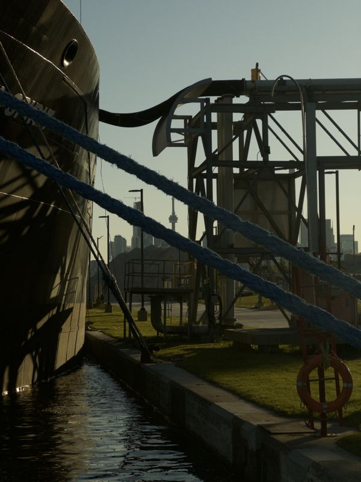

South Riverdale, Toronto · May 30, 2026South Riverdale, Toronto · May 30, 2026

South Riverdale, Toronto · May 30, 2026South Riverdale, Toronto · May 30, 2026South Riverdale, Toronto · May 30, 2026Beaches—East York, Toronto · May 30, 2026East York, Toronto · May 30, 2026North Riverdale, Toronto · May 30, 2026North Riverdale, Toronto · May 30, 2026North Riverdale, Toronto · May 30, 2026North Riverdale, Toronto · May 30, 2026Harbourfront, Toronto · May 28, 2026Harbourfront, Toronto · May 28, 2026Harbourfront, Toronto · May 28, 2026Spadina—Fort York, Toronto · May 28, 2026Algonquin Island, Toronto · May 28, 2026Ward's Island, Toronto · May 28, 2026Ward's Island, Toronto · May 28, 2026Ward's Island, Toronto · May 28, 2026Ward's Island, Toronto · May 28, 2026Ward's Island, Toronto · May 28, 2026Ward's Island, Toronto · May 28, 2026Spadina—Fort York, Toronto · May 28, 2026Spadina—Fort York, Toronto · May 28, 2026Spadina—Fort York, Toronto · May 28, 2026Spadina—Fort York, Toronto · May 28, 2026Harbourfront, Toronto · May 28, 2026Spadina—Fort York, Toronto · May 28, 2026Harbourfront-CityPlace, Toronto · May 28, 2026
no photos here yet — drop images in /photos and run
python3 generate-photos.py.